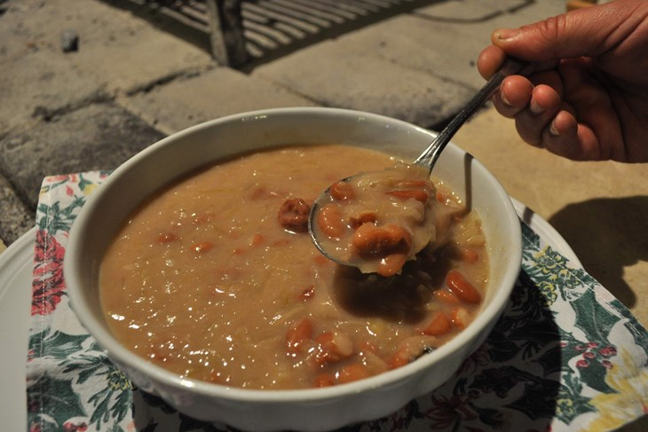

Jota

Descriotion
Fuži is a traditional pasta of Istria region, in Croatia and Slovenia. The pasta dough is rolled out into a thin sheet, cut into strips three to four centimetres wide, and placed over each other.
It is usually served with a local version of goulash, a mild red veal sauce, which is usually made out of onions, tomato paste, white wine and broth. Common variations include rooster sauce or game sauce, such as boar or rabbit.
Ingredients
- 200 g of colorful beans
- 500 g of sauerkraut
- 300 g of patatoes
- 400 g of dried ribs or other dry meat
- 80 g od panceta
- 3 cloves of garlic
- salt
- peppercorns
- laurel leaves
Steps
- Boil the cleaned soaked beans for a short time, drain them and put them to boil again.
- Put the washed sauerkraut and dry ribs to cook in a separate container.
- When the beans are half soft, add them along with the liquid to the cabbage. Add bay leaf, pepper, salt and chopped bacon and garlic together.
- After that, stir in the diced potatoes and continue to cook until everything is soft.